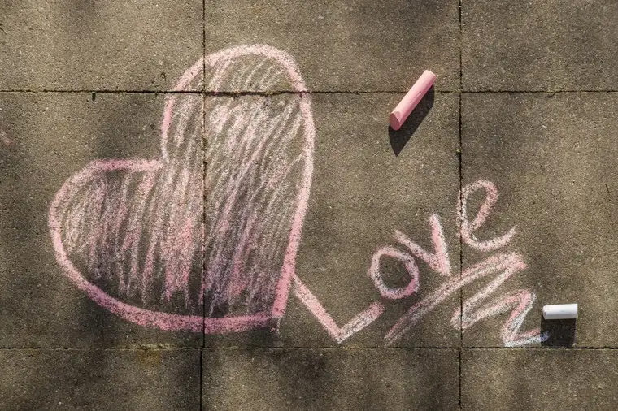

When I began praying on the sidewalk at our state’s only abortion facility more regularly, I joined with others who have something in common with me – the blessing of being a mother.
As some of us began keeping in touch with each other every week, it seemed fitting to name our prayer group, and “Mothers Loving Mothers” seemed to suit us well.
Not all who pray there are physical mothers. Some are fathers, and others still, though not earthly mothers, have been spiritual mothers to many.
No matter what our own mothering experience looks like, we seem to agree on one sight that hurts our collective hearts: a fellow mother accompanying her daughter in to have an abortion.
In other words, a grandmother helping her daughter abort her own grandchild.
Recently, one of our advocates, Bonnie Spies, shared with me in writing about how much this grieves her.
As a mother, Bonnie said, she understands how “watching your child suffering hurts more than suffering ourselves,” and she realizes “many hope this solution will ease suffering.”
But, she says, “I can’t imagine how hard it must be to learn, firsthand, that this wasn’t the best solution after all; to watch your child suffer more and longer has to be such a burden for those moms (and grandmothers).”
Now that she’s a grandmother herself, Bonnie wrote, she’s “become aware on a totally different level the magnitude of loss for that family.”
“(We grandmothers) joke about being able to give grandbabies back to the mom when they cry…and about snuggles in the daytime and a full night’s sleep…Yes, those things are great,” she says. “But the best part of being a grandmother is watching the person you love most fall head over heels in love with the person they now love most.”
“There are no words that even come close to that level of joy,” Bonnie continued, adding that when mothers bring their daughters to have an abortion “they are replacing the greatest joy they will ever know with heartache.”
The thought crushes her. “So I pray. And I try to offer hope,” she said, “and then I go home and cry.”
Thankfully, the hopeful moments come, too.
Another prayer advocate, Brad Youngquist, a father, reached out to share about a successful outcome brought on by the tireless efforts of Lila Harmsen, a regular at the sidewalk. He recounted meeting up with her to deliver a small table and chair to one of her “saves,” a single mother from Liberia.
“My wife Jolene had donated the table and two chairs. About all this young gal had in her apartment was a very basic bed, a TV, a microwave, this table, and a crib donated by David Foerster,” he shared, noting that the mother was moving to another slightly larger apartment.
“And who was there to help her move?” he asked. “Lila, age 79, and her two sisters – one is 90!”
Brad noted how much he enjoyed meeting the “incredibly good-natured and soon-expecting mom, plus seeing Lila, who has a strong friendship to her.”
The mother, he added, works in a retirement home and loves that the elderly people there value her and call her “Honey.”
“Her mother died when she was a child, so she was living with her aunt who raised her,” he says. “The aunt had been pushing for an abortion, so she moved out, but the aunt is now accepting her decision to keep her baby.”
Apparently, earlier in the day, the mother had driven past the sidewalk “to see those who supported her in becoming a mom.” “It was quite rewarding to see a positive outcome of our sidewalk efforts, though Lila obviously had by far the biggest impact,” Brad wrote.
“I helped carry most of the heavy items,” he continued, “and after everything was moved, Lila walked me out to the apartment entrance, and we both talked of the priceless value of this baby.”
Truly, it doesn’t get any better than helping support a child who had been just minutes away from abortion. To know you had a hand in assisting God in bringing that beautiful person into being seems nothing short of the most amazing reward possible on this earth.
In this month of Mary and mothers, let us make an appeal to Our Blessed Mother that, through our love and her mother’s heart, more lives might be spared in days to come, for “blessed is the fruit of thy womb,” and every womb that bears life.
[Note: I write about my experiences on the sidewalk Downtown Fargo on Wednesday, the day abortions happen at our state’s only abortion facility, for New Earth magazine — the official news publication of the Fargo Diocese. I hope you find “Sidewalk Stories” helpful in understanding the truth about abortion and how it plays out tragically each week here in Fargo, N.D. The preceding ran in New Earth’s May 2018 issue.]